使用Golang时读到了这篇文章，感觉每一条都非常有用，所以转到这里。感谢原文作者和译者。
译文地址：https://segmentfault.com/a/1190000013739000#articleHeader43
原文地址：http://devs.cloudimmunity.com/gotchas-and-common-mistakes-in-go-golang/
前言
Go 是一门简单有趣的编程语言，与其他语言一样，在使用时不免会遇到很多坑，不过它们大多不是 Go 本身的设计缺陷。如果你刚从其他语言转到 Go，那这篇文章里的坑多半会踩到。
如果花时间学习官方 doc、wiki、讨论邮件列表、 Rob Pike 的大量文章以及 Go 的源码，会发现这篇文章中的坑是很常见的，新手跳过这些坑，能减少大量调试代码的时间。
1. 左大括号 { 一般不能单独放一行
在其他大多数语言中，{ 的位置你自行决定。Go 比较特别，遵守分号注入规则（automatic semicolon injection）：编译器会在每行代码尾部特定分隔符后加 ; 来分隔多条语句，比如会在 ) 后加分号：
// 错误示例
func main()
{
println("hello world")
}
// 等效于
func main(); // 无函数体
{
println("hello world")
}
> ./main.go: missing function body
> ./main.go: syntax error: unexpected semicolon or newline before {
// 正确示例
func main() {
println("hello world")
}
注意代码块等特殊情况：
// { 并不遵守分号注入规则，不会在其后边自动加分，此时可换行
func main() {
{
println("hello world")
}
}
2. 未使用的变量
如果在函数体代码中有未使用的变量，则无法通过编译，不过全局变量声明但不使用是可以的。
即使变量声明后为变量赋值，依旧无法通过编译，需在某处使用它：
// 错误示例
var gvar int // 全局变量，声明不使用也可以
func main() {
var one int // error: one declared and not used
two := 2 // error: two declared and not used
var three int // error: three declared and not used
three = 3
}
// 正确示例
// 可以直接注释或移除未使用的变量
func main() {
var one int
_ = one
two := 2
println(two)
var three int
one = three
var four int
four = four
}
3. 未使用的 import
如果你 import 一个包，但包中的变量、函数、接口和结构体一个都没有用到的话，将编译失败。
可以使用 _ 下划线符号作为别名来忽略导入的包，从而避免编译错误，这只会执行 package 的 init()
// 错误示例
import (
"fmt" // imported and not used: "fmt"
"log" // imported and not used: "log"
"time" // imported and not used: "time"
)
func main() {
}
// 正确示例
// 可以使用 goimports 工具来注释或移除未使用到的包
import (
_ "fmt"
"log"
"time"
)
func main() {
_ = log.Println
_ = time.Now
}
4. 简短声明的变量只能在函数内部使用
// 错误示例
myvar := 1 // syntax error: non-declaration statement outside function body
func main() {
}
// 正确示例
var myvar = 1
func main() {
}
5. 使用简短声明来重复声明变量
不能用简短声明方式来单独为一个变量重复声明， := 左侧至少有一个新变量，才允许多变量的重复声明：
// 错误示例
func main() {
one := 0
one := 1 // error: no new variables on left side of :=
}
// 正确示例
func main() {
one := 0
one, two := 1, 2 // two 是新变量，允许 one 的重复声明。比如 error 处理经常用同名变量 err
one, two = two, one // 交换两个变量值的简写
}
6. 不能使用简短声明来设置字段的值
struct 的变量字段不能使用 := 来赋值以使用预定义的变量来避免解决：
// 错误示例
type info struct {
result int
}
func work() (int, error) {
return 3, nil
}
func main() {
var data info
data.result, err := work() // error: non-name data.result on left side of :=
fmt.Printf("info: %+v\n", data)
}
// 正确示例
func main() {
var data info
var err error // err 需要预声明
data.result, err = work()
if err != nil {
fmt.Println(err)
return
}
fmt.Printf("info: %+v\n", data)
}
7. 不小心覆盖了变量
对从动态语言转过来的开发者来说，简短声明很好用，这可能会让人误会 := 是一个赋值操作符。
如果你在新的代码块中像下边这样误用了 :=，编译不会报错，但是变量不会按你的预期工作：
func main() {
x := 1
println(x) // 1
{
println(x) // 1
x := 2
println(x) // 2 // 新的 x 变量的作用域只在代码块内部
}
println(x) // 1
}
这是 Go 开发者常犯的错，而且不易被发现。
可使用 vet 工具来诊断这种变量覆盖，Go 默认不做覆盖检查，添加 -shadow 选项来启用：
> go tool vet -shadow main.go
main.go:9: declaration of "x" shadows declaration at main.go:5
注意 vet 不会报告全部被覆盖的变量，可以使用 go-nyet 来做进一步的检测：
> $GOPATH/bin/go-nyet main.go
main.go:10:3:Shadowing variable `x`
8. 显式类型的变量无法使用 nil 来初始化
nil 是 interface、function、pointer、map、slice 和 channel 类型变量的默认初始值。但声明时不指定类型，编译器也无法推断出变量的具体类型。
// 错误示例
func main() {
var x = nil // error: use of untyped nil
_ = x
}
// 正确示例
func main() {
var x interface{} = nil
_ = x
}
9. 直接使用值为 nil 的 slice、map
允许对值为 nil 的 slice 添加元素，但对值为 nil 的 map 添加元素则会造成运行时 panic
// map 错误示例
func main() {
var m map[string]int
m["one"] = 1 // error: panic: assignment to entry in nil map
// m := make(map[string]int)// map 的正确声明，分配了实际的内存
}
// slice 正确示例
func main() {
var s []int
s = append(s, 1)
}
10. map 容量
在创建 map 类型的变量时可以指定容量，但不能像 slice 一样使用 cap() 来检测分配空间的大小：
// 错误示例
func main() {
m := make(map[string]int, 99)
println(cap(m)) // error: invalid argument m1 (type map[string]int) for cap
}
11. string 类型的变量值不能为 nil
对那些喜欢用 nil 初始化字符串的人来说，这就是坑：
// 错误示例
func main() {
var s string = nil // cannot use nil as type string in assignment
if s == nil { // invalid operation: s == nil (mismatched types string and nil)
s = "default"
}
}
// 正确示例
func main() {
var s string // 字符串类型的零值是空串 ""
if s == "" {
s = "default"
}
}
12. Array 类型的值作为函数参数
在 C/C++ 中，数组（名）是指针。将数组作为参数传进函数时，相当于传递了数组内存地址的引用，在函数内部会改变该数组的值。
在 Go 中，数组是值。作为参数传进函数时，传递的是数组的原始值拷贝，此时在函数内部是无法更新该数组的：
// 数组使用值拷贝传参
func main() {
x := [3]int{1,2,3}
func(arr [3]int) {
arr[0] = 7
fmt.Println(arr) // [7 2 3]
}(x)
fmt.Println(x) // [1 2 3] // 并不是你以为的 [7 2 3]
}
如果想修改参数数组：
- 直接传递指向这个数组的指针类型：
// 传址会修改原数据
func main() {
x := [3]int{1,2,3}
func(arr *[3]int) {
(*arr)[0] = 7
fmt.Println(arr) // &[7 2 3]
}(&x)
fmt.Println(x) // [7 2 3]
}
- 直接使用 slice：即使函数内部得到的是 slice 的值拷贝，但依旧会更新 slice 的原始数据（底层 array）
// 会修改 slice 的底层 array，从而修改 slice
func main() {
x := []int{1, 2, 3}
func(arr []int) {
arr[0] = 7
fmt.Println(x) // [7 2 3]
}(x)
fmt.Println(x) // [7 2 3]
}
13. range 遍历 slice 和 array 时混淆了返回值
与其他编程语言中的 for-in 、foreach 遍历语句不同，Go 中的 range 在遍历时会生成 2 个值，第一个是元素索引，第二个是元素的值：
// 错误示例
func main() {
x := []string{"a", "b", "c"}
for v := range x {
fmt.Println(v) // 1 2 3
}
}
// 正确示例
func main() {
x := []string{"a", "b", "c"}
for _, v := range x { // 使用 _ 丢弃索引
fmt.Println(v)
}
}
14. slice 和 array 其实是一维数据
看起来 Go 支持多维的 array 和 slice，可以创建数组的数组、切片的切片，但其实并不是。
对依赖动态计算多维数组值的应用来说，就性能和复杂度而言，用 Go 实现的效果并不理想。
可以使用原始的一维数组、“独立“ 的切片、“共享底层数组”的切片来创建动态的多维数组。
使用原始的一维数组：要做好索引检查、溢出检测、以及当数组满时再添加值时要重新做内存分配。
使用“独立”的切片分两步：
创建外部 slice
对每个内部 slice 进行内存分配
注意内部的 slice 相互独立，使得任一内部 slice 增缩都不会影响到其他的 slice
// 使用各自独立的 6 个 slice 来创建 [2][3] 的动态多维数组
func main() {
x := 2
y := 4
table := make([][]int, x)
for i := range table {
table[i] = make([]int, y)
}
}
- 使用“共享底层数组”的切片
创建一个存放原始数据的容器 slice
创建其他的 slice
切割原始 slice 来初始化其他的 slice
func main() {
h, w := 2, 4
raw := make([]int, h*w)
for i := range raw {
raw[i] = i
}
// 初始化原始 slice
fmt.Println(raw, &raw[4]) // [0 1 2 3 4 5 6 7] 0xc420012120
table := make([][]int, h)
for i := range table {
// 等间距切割原始 slice，创建动态多维数组 table
// 0: raw[0*4: 0*4 + 4]
// 1: raw[1*4: 1*4 + 4]
table[i] = raw[i*w : i*w + w]
}
fmt.Println(table, &table[1][0]) // [[0 1 2 3] [4 5 6 7]] 0xc420012120
}
更多关于多维数组的参考
go-how-is-two-dimensional-arrays-memory-representation
what-is-a-concise-way-to-create-a-2d-slice-in-go
15. 访问 map 中不存在的 key
和其他编程语言类似，如果访问了 map 中不存在的 key 则希望能返回 nil，比如在 PHP 中：
> php -r '$v = ["x"=>1, "y"=>2]; @var_dump($v["z"]);'
NULL
Go 则会返回元素对应数据类型的零值，比如 nil、'' 、false 和 0，取值操作总有值返回，故不能通过取出来的值来判断 key 是不是在 map 中。
检查 key 是否存在可以用 map 直接访问，检查返回的第二个参数即可：
// 错误的 key 检测方式
func main() {
x := map[string]string{"one": "2", "two": "", "three": "3"}
if v := x["two"]; v == "" {
fmt.Println("key two is no entry") // 键 two 存不存在都会返回的空字符串
}
}
// 正确示例
func main() {
x := map[string]string{"one": "2", "two": "", "three": "3"}
if _, ok := x["two"]; !ok {
fmt.Println("key two is no entry")
}
}
16. string 类型的值是常量，不可更改
尝试使用索引遍历字符串，来更新字符串中的个别字符，是不允许的。
string 类型的值是只读的二进制 byte slice，如果真要修改字符串中的字符，将 string 转为 []byte 修改后，再转为 string 即可：
// 修改字符串的错误示例
func main() {
x := "text"
x[0] = "T" // error: cannot assign to x[0]
fmt.Println(x)
}
// 修改示例
func main() {
x := "text"
xBytes := []byte(x)
xBytes[0] = 'T' // 注意此时的 T 是 rune 类型
x = string(xBytes)
fmt.Println(x) // Text
}
注意： 上边的示例并不是更新字符串的正确姿势，因为一个 UTF8 编码的字符可能会占多个字节，比如汉字就需要 3~4 个字节来存储，此时更新其中的一个字节是错误的。
更新字串的正确姿势：将 string 转为 rune slice（此时 1 个 rune 可能占多个 byte），直接更新 rune 中的字符
func main() {
x := "text"
xRunes := []rune(x)
xRunes[0] = '我'
x = string(xRunes)
fmt.Println(x) // 我ext
}
17. string 与 byte slice 之间的转换
当进行 string 和 byte slice 相互转换时，参与转换的是拷贝的原始值。这种转换的过程，与其他编程语的强制类型转换操作不同，也和新 slice 与旧 slice 共享底层数组不同。
Go 在 string 与 byte slice 相互转换上优化了两点，避免了额外的内存分配：
- 在
map[string]中查找 key 时，使用了对应的[]byte，避免做m[string(key)]的内存分配 - 使用
for range迭代 string 转换为 []byte 的迭代：for i,v := range []byte(str) {...}
雾：参考原文
18. string 与索引操作符
对字符串用索引访问返回的不是字符，而是一个 byte 值。
这种处理方式和其他语言一样，比如 PHP 中：
> php -r '$name="中文"; var_dump($name);' # "中文" 占用 6 个字节
string(6) "中文"
> php -r '$name="中文"; var_dump($name[0]);' # 把第一个字节当做 Unicode 字符读取，显示 U+FFFD
string(1) "�"
> php -r '$name="中文"; var_dump($name[0].$name[1].$name[2]);'
string(3) "中"
func main() {
x := "ascii"
fmt.Println(x[0]) // 97
fmt.Printf("%T\n", x[0])// uint8
}
如果需要使用 for range 迭代访问字符串中的字符（unicode code point / rune），标准库中有 "unicode/utf8" 包来做 UTF8 的相关解码编码。另外 utf8string 也有像 func (s *String) At(i int) rune 等很方便的库函数。
19. 字符串并不都是 UTF8 文本
string 的值不必是 UTF8 文本，可以包含任意的值。只有字符串是文字字面值时才是 UTF8 文本，字串可以通过转义来包含其他数据。
判断字符串是否是 UTF8 文本，可使用 "unicode/utf8" 包中的 ValidString() 函数：
func main() {
str1 := "ABC"
fmt.Println(utf8.ValidString(str1)) // true
str2 := "A\xfeC"
fmt.Println(utf8.ValidString(str2)) // false
str3 := "A\\xfeC"
fmt.Println(utf8.ValidString(str3)) // true // 把转义字符转义成字面值
}
20. 字符串的长度
在 Python 中：
data = u'♥'
print(len(data)) # 1
然而在 Go 中：
func main() {
char := "♥"
fmt.Println(len(char)) // 3
}
Go 的内建函数 len() 返回的是字符串的 byte 数量，而不是像 Python 中那样是计算 Unicode 字符数。
如果要得到字符串的字符数，可使用 "unicode/utf8" 包中的 RuneCountInString(str string) (n int)
func main() {
char := "♥"
fmt.Println(utf8.RuneCountInString(char)) // 1
}
注意： RuneCountInString 并不总是返回我们看到的字符数，因为有的字符会占用 2 个 rune：
func main() {
char := "é"
fmt.Println(len(char)) // 3
fmt.Println(utf8.RuneCountInString(char)) // 2
fmt.Println("cafe\u0301") // café // 法文的 cafe，实际上是两个 rune 的组合
}
21. 在多行 array、slice、map 语句中缺少 , 号
func main() {
x := []int {
1,
2 // syntax error: unexpected newline, expecting comma or }
}
y := []int{1,2,}
z := []int{1,2}
// ...
}
声明语句中 } 折叠到单行后，尾部的 , 不是必需的。
22. log.Fatal 和 log.Panic 不只是 log
log 标准库提供了不同的日志记录等级，与其他语言的日志库不同，Go 的 log 包在调用 Fatal*()、Panic*() 时能做更多日志外的事，如中断程序的执行等：
func main() {
log.Fatal("Fatal level log: log entry") // 输出信息后，程序终止执行
log.Println("Nomal level log: log entry")
}
23. 对内建数据结构的操作并不是同步的
尽管 Go 本身有大量的特性来支持并发，但并不保证并发的数据安全，用户需自己保证变量等数据以原子操作更新。
goroutine 和 channel 是进行原子操作的好方法，或使用 "sync" 包中的锁。
24. range 迭代 string 得到的值
range 得到的索引是字符值（Unicode point / rune）第一个字节的位置，与其他编程语言不同，这个索引并不直接是字符在字符串中的位置。
注意一个字符可能占多个 rune，比如法文单词 café 中的 é。操作特殊字符可使用norm 包。
for range 迭代会尝试将 string 翻译为 UTF8 文本，对任何无效的码点都直接使用 0XFFFD rune（�）UNicode 替代字符来表示。如果 string 中有任何非 UTF8 的数据，应将 string 保存为 byte slice 再进行操作。
func main() {
data := "A\xfe\x02\xff\x04"
for _, v := range data {
fmt.Printf("%#x ", v) // 0x41 0xfffd 0x2 0xfffd 0x4 // 错误
}
for _, v := range []byte(data) {
fmt.Printf("%#x ", v) // 0x41 0xfe 0x2 0xff 0x4 // 正确
}
}
25. range 迭代 map
如果你希望以特定的顺序（如按 key 排序）来迭代 map，要注意每次迭代都可能产生不一样的结果。
Go 的运行时是有意打乱迭代顺序的，所以你得到的迭代结果可能不一致。但也并不总会打乱，得到连续相同的 5 个迭代结果也是可能的，如：
func main() {
m := map[string]int{"one": 1, "two": 2, "three": 3, "four": 4}
for k, v := range m {
fmt.Println(k, v)
}
}
如果你去 Go Playground 重复运行上边的代码，输出是不会变的，只有你更新代码它才会重新编译。重新编译后迭代顺序是被打乱的：
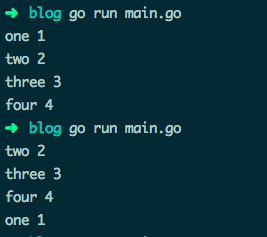
26. switch 中的 fallthrough 语句
switch 语句中的 case 代码块会默认带上 break，但可以使用 fallthrough 来强制执行下一个 case 代码块。
func main() {
isSpace := func(char byte) bool {
switch char {
case ' ': // 空格符会直接 break，返回 false // 和其他语言不一样
// fallthrough // 返回 true
case '\t':
return true
}
return false
}
fmt.Println(isSpace('\t')) // true
fmt.Println(isSpace(' ')) // false
}
不过你可以在 case 代码块末尾使用 fallthrough，强制执行下一个 case 代码块。
也可以改写 case 为多条件判断：
func main() {
isSpace := func(char byte) bool {
switch char {
case ' ', '\t':
return true
}
return false
}
fmt.Println(isSpace('\t')) // true
fmt.Println(isSpace(' ')) // true
}
27. 自增和自减运算
很多编程语言都自带前置后置的 ++、-- 运算。但 Go 特立独行，去掉了前置操作，同时 ++、— 只作为运算符而非表达式。
// 错误示例
func main() {
data := []int{1, 2, 3}
i := 0
++i // syntax error: unexpected ++, expecting }
fmt.Println(data[i++]) // syntax error: unexpected ++, expecting :
}
// 正确示例
func main() {
data := []int{1, 2, 3}
i := 0
i++
fmt.Println(data[i]) // 2
}
28. 按位取反
很多编程语言使用 ~ 作为一元按位取反（NOT）操作符，Go 重用 ^ XOR 操作符来按位取反：
// 错误的取反操作
func main() {
fmt.Println(~2) // bitwise complement operator is ^
}
// 正确示例
func main() {
var d uint8 = 2
fmt.Printf("%08b\n", d) // 00000010
fmt.Printf("%08b\n", ^d) // 11111101
}
同时 ^ 也是按位异或（XOR）操作符。
一个操作符能重用两次，是因为一元的 NOT 操作 NOT 0x02，与二元的 XOR 操作 0x22 XOR 0xff 是一致的。
Go 也有特殊的操作符 AND NOT &^ 操作符，不同位才取1。
func main() {
var a uint8 = 0x82
var b uint8 = 0x02
fmt.Printf("%08b [A]\n", a)
fmt.Printf("%08b [B]\n", b)
fmt.Printf("%08b (NOT B)\n", ^b)
fmt.Printf("%08b ^ %08b = %08b [B XOR 0xff]\n", b, 0xff, b^0xff)
fmt.Printf("%08b ^ %08b = %08b [A XOR B]\n", a, b, a^b)
fmt.Printf("%08b & %08b = %08b [A AND B]\n", a, b, a&b)
fmt.Printf("%08b &^%08b = %08b [A 'AND NOT' B]\n", a, b, a&^b)
fmt.Printf("%08b&(^%08b)= %08b [A AND (NOT B)]\n", a, b, a&(^b))
}
10000010 [A]
00000010 [B]
11111101 (NOT B)
00000010 ^ 11111111 = 11111101 [B XOR 0xff]
10000010 ^ 00000010 = 10000000 [A XOR B]
10000010 & 00000010 = 00000010 [A AND B]
10000010 &^00000010 = 10000000 [A 'AND NOT' B]
10000010&(^00000010)= 10000000 [A AND (NOT B)]
29. 运算符的优先级
除了位清除（bit clear）操作符，Go 也有很多和其他语言一样的位操作符，但优先级另当别论。
func main() {
fmt.Printf("0x2 & 0x2 + 0x4 -> %#x\n", 0x2&0x2+0x4) // & 优先 +
//prints: 0x2 & 0x2 + 0x4 -> 0x6
//Go: (0x2 & 0x2) + 0x4
//C++: 0x2 & (0x2 + 0x4) -> 0x2
fmt.Printf("0x2 + 0x2 << 0x1 -> %#x\n", 0x2+0x2<<0x1) // << 优先 +
//prints: 0x2 + 0x2 << 0x1 -> 0x6
//Go: 0x2 + (0x2 << 0x1)
//C++: (0x2 + 0x2) << 0x1 -> 0x8
fmt.Printf("0xf | 0x2 ^ 0x2 -> %#x\n", 0xf|0x2^0x2) // | 优先 ^
//prints: 0xf | 0x2 ^ 0x2 -> 0xd
//Go: (0xf | 0x2) ^ 0x2
//C++: 0xf | (0x2 ^ 0x2) -> 0xf
}
优先级列表：
Precedence Operator
5 * / % << >> & &^
4 + - | ^
3 == != < <= > >=
2 &&
1 ||
30. 不导出的 struct 字段无法被 encode
以小写字母开头的字段成员是无法被外部直接访问的，所以 struct 在进行 json、xml、gob 等格式的 encode 操作时，这些私有字段会被忽略，导出时得到零值：
func main() {
in := MyData{1, "two"}
fmt.Printf("%#v\n", in) // main.MyData{One:1, two:"two"}
encoded, _ := json.Marshal(in)
fmt.Println(string(encoded)) // {"One":1} // 私有字段 two 被忽略了
var out MyData
json.Unmarshal(encoded, &out)
fmt.Printf("%#v\n", out) // main.MyData{One:1, two:""}
}
31. 程序退出时还有 goroutine 在执行
程序默认不等所有 goroutine 都执行完才退出，这点需要特别注意：
// 主程序会直接退出
func main() {
workerCount := 2
for i := 0; i < workerCount; i++ {
go doIt(i)
}
time.Sleep(1 * time.Second)
fmt.Println("all done!")
}
func doIt(workerID int) {
fmt.Printf("[%v] is running\n", workerID)
time.Sleep(3 * time.Second) // 模拟 goroutine 正在执行
fmt.Printf("[%v] is done\n", workerID)
}
如下，main() 主程序不等两个 goroutine 执行完就直接退出了：
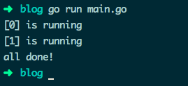
常用解决办法：使用 "WaitGroup" 变量，它会让主程序等待所有 goroutine 执行完毕再退出。
如果你的 goroutine 要做消息的循环处理等耗时操作，可以向它们发送一条 kill 消息来关闭它们。或直接关闭一个它们都等待接收数据的 channel：
// 等待所有 goroutine 执行完毕
// 进入死锁
func main() {
var wg sync.WaitGroup
done := make(chan struct{})
workerCount := 2
for i := 0; i < workerCount; i++ {
wg.Add(1)
go doIt(i, done, wg)
}
close(done)
wg.Wait()
fmt.Println("all done!")
}
func doIt(workerID int, done <-chan struct{}, wg sync.WaitGroup) {
fmt.Printf("[%v] is running\n", workerID)
defer wg.Done()
<-done
fmt.Printf("[%v] is done\n", workerID)
}
执行结果：
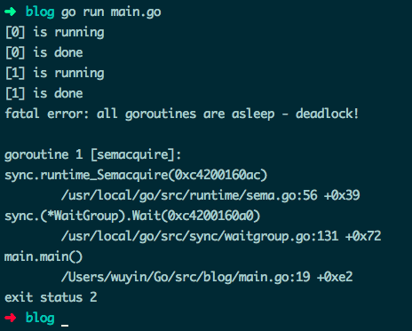
看起来好像 goroutine 都执行完了，然而报错：
fatal error: all goroutines are asleep - deadlock!
为什么会发生死锁？goroutine 在退出前调用了 wg.Done() ，程序应该正常退出的。
原因是 goroutine 得到的 "WaitGroup" 变量是 var wg WaitGroup 的一份拷贝值，即 doIt() 传参只传值。所以哪怕在每个 goroutine 中都调用了 wg.Done()， 主程序中的 wg 变量并不会受到影响。
// 等待所有 goroutine 执行完毕
// 使用传址方式为 WaitGroup 变量传参
// 使用 channel 关闭 goroutine
func main() {
var wg sync.WaitGroup
done := make(chan struct{})
ch := make(chan interface{})
workerCount := 2
for i := 0; i < workerCount; i++ {
wg.Add(1)
go doIt(i, ch, done, &wg) // wg 传指针，doIt() 内部会改变 wg 的值
}
for i := 0; i < workerCount; i++ { // 向 ch 中发送数据，关闭 goroutine
ch <- i
}
close(done)
wg.Wait()
close(ch)
fmt.Println("all done!")
}
func doIt(workerID int, ch <-chan interface{}, done <-chan struct{}, wg *sync.WaitGroup) {
fmt.Printf("[%v] is running\n", workerID)
defer wg.Done()
for {
select {
case m := <-ch:
fmt.Printf("[%v] m => %v\n", workerID, m)
case <-done:
fmt.Printf("[%v] is done\n", workerID)
return
}
}
}
运行效果：
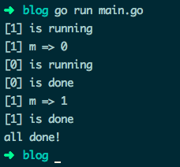
32. 向无缓冲的 channel 发送数据，只要 receiver 准备好了就会立刻返回
只有在数据被 receiver 处理时，sender 才会阻塞。因运行环境而异，在 sender 发送完数据后，receiver 的 goroutine 可能没有足够的时间处理下一个数据。如：
func main() {
ch := make(chan string)
go func() {
for m := range ch {
fmt.Println("Processed:", m)
time.Sleep(1 * time.Second) // 模拟需要长时间运行的操作
}
}()
ch <- "cmd.1"
ch <- "cmd.2" // 不会被接收处理
}
运行效果：
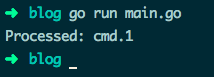
33. 向已关闭的 channel 发送数据会造成 panic
从已关闭的 channel 接收数据是安全的：
接收状态值 ok 是 false 时表明 channel 中已没有数据可以接收了。类似的，从有缓冲的 channel 中接收数据，缓存的数据获取完再没有数据可取时，状态值也是 false
向已关闭的 channel 中发送数据会造成 panic：
func main() {
ch := make(chan int)
for i := 0; i < 3; i++ {
go func(idx int) {
ch <- idx
}(i)
}
fmt.Println(<-ch) // 输出第一个发送的值
close(ch) // 不能关闭，还有其他的 sender
time.Sleep(2 * time.Second) // 模拟做其他的操作
}
运行结果：
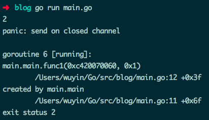
针对上边有 bug 的这个例子，可使用一个废弃 channel done 来告诉剩余的 goroutine 无需再向 ch 发送数据。此时 <- done 的结果是 {}：
func main() {
ch := make(chan int)
done := make(chan struct{})
for i := 0; i < 3; i++ {
go func(idx int) {
select {
case ch <- (idx + 1) * 2:
fmt.Println(idx, "Send result")
case <-done:
fmt.Println(idx, "Exiting")
}
}(i)
}
fmt.Println("Result: ", <-ch)
close(done)
time.Sleep(3 * time.Second)
}
运行效果：
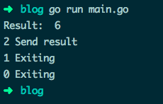
34. 使用了值为 nil 的 channel
在一个值为 nil 的 channel 上发送和接收数据将永久阻塞：
func main() {
var ch chan int // 未初始化，值为 nil
for i := 0; i < 3; i++ {
go func(i int) {
ch <- i
}(i)
}
fmt.Println("Result: ", <-ch)
time.Sleep(2 * time.Second)
}
runtime 死锁错误：
fatal error: all goroutines are asleep - deadlock! goroutine 1 [chan receive (nil chan)]
利用这个死锁的特性，可以用在 select 中动态的打开和关闭 case 语句块：
func main() {
inCh := make(chan int)
outCh := make(chan int)
go func() {
var in <-chan int = inCh
var out chan<- int
var val int
for {
select {
case out <- val:
println("--------")
out = nil
in = inCh
case val = <-in:
println("++++++++++")
out = outCh
in = nil
}
}
}()
go func() {
for r := range outCh {
fmt.Println("Result: ", r)
}
}()
time.Sleep(0)
inCh <- 1
inCh <- 2
time.Sleep(3 * time.Second)
}
运行效果：
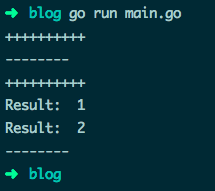
34. 若函数 receiver 传参是传值方式，则无法修改参数的原有值
方法 receiver 的参数与一般函数的参数类似：如果声明为值，那方法体得到的是一份参数的值拷贝，此时对参数的任何修改都不会对原有值产生影响。
除非 receiver 参数是 map 或 slice 类型的变量，并且是以指针方式更新 map 中的字段、slice 中的元素的，才会更新原有值:
type data struct {
num int
key *string
items map[string]bool
}
func (this *data) pointerFunc() {
this.num = 7
}
func (this data) valueFunc() {
this.num = 8
*this.key = "valueFunc.key"
this.items["valueFunc"] = true
}
func main() {
key := "key1"
d := data{1, &key, make(map[string]bool)}
fmt.Printf("num=%v key=%v items=%v\n", d.num, *d.key, d.items)
d.pointerFunc() // 修改 num 的值为 7
fmt.Printf("num=%v key=%v items=%v\n", d.num, *d.key, d.items)
d.valueFunc() // 修改 key 和 items 的值
fmt.Printf("num=%v key=%v items=%v\n", d.num, *d.key, d.items)
}
运行结果：
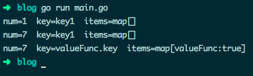
35. 关闭 HTTP 的响应体
使用 HTTP 标准库发起请求、获取响应时，即使你不从响应中读取任何数据或响应为空，都需要手动关闭响应体。新手很容易忘记手动关闭，或者写在了错误的位置：
// 请求失败造成 panic
func main() {
resp, err := http.Get("https://api.ipify.org?format=json")
defer resp.Body.Close() // resp 可能为 nil，不能读取 Body
if err != nil {
fmt.Println(err)
return
}
body, err := ioutil.ReadAll(resp.Body)
checkError(err)
fmt.Println(string(body))
}
func checkError(err error) {
if err != nil{
log.Fatalln(err)
}
}
上边的代码能正确发起请求，但是一旦请求失败，变量 resp 值为 nil，造成 panic：
panic: runtime error: invalid memory address or nil pointer dereference
应该先检查 HTTP 响应错误为 nil，再调用 resp.Body.Close() 来关闭响应体：
// 大多数情况正确的示例
func main() {
resp, err := http.Get("https://api.ipify.org?format=json")
checkError(err)
defer resp.Body.Close() // 绝大多数情况下的正确关闭方式
body, err := ioutil.ReadAll(resp.Body)
checkError(err)
fmt.Println(string(body))
}
输出：
Get https://api.ipify.org?format=json: x509: certificate signed by unknown authority
绝大多数请求失败的情况下，resp 的值为 nil 且 err 为 non-nil。但如果你得到的是重定向错误，那它俩的值都是 non-nil，最后依旧可能发生内存泄露。2 个解决办法：
- 可以直接在处理 HTTP 响应错误的代码块中，直接关闭非 nil 的响应体。
- 手动调用
defer来关闭响应体：
// 正确示例
func main() {
resp, err := http.Get("http://www.baidu.com")
// 关闭 resp.Body 的正确姿势
if resp != nil {
defer resp.Body.Close()
}
checkError(err)
body, err := ioutil.ReadAll(resp.Body)
checkError(err)
fmt.Println(string(body))
}
resp.Body.Close() 早先版本的实现是读取响应体的数据之后丢弃，保证了 keep-alive 的 HTTP 连接能重用处理不止一个请求。但 Go 的最新版本将读取并丢弃数据的任务交给了用户，如果你不处理，HTTP 连接可能会直接关闭而非重用，参考在 Go 1.5 版本文档。
如果程序大量重用 HTTP 长连接，你可能要在处理响应的逻辑代码中加入：
_, err = io.Copy(ioutil.Discard, resp.Body) // 手动丢弃读取完毕的数据
如果你需要完整读取响应，上边的代码是需要写的。比如在解码 API 的 JSON 响应数据：
json.NewDecoder(resp.Body).Decode(&data)
36. 关闭 HTTP 连接
一些支持 HTTP1.1 或 HTTP1.0 配置了 connection: keep-alive 选项的服务器会保持一段时间的长连接。但标准库 "net/http" 的连接默认只在服务器主动要求关闭时才断开，所以你的程序可能会消耗完 socket 描述符。解决办法有 2 个，请求结束后：
- 直接设置请求变量的
Close字段值为true，每次请求结束后就会主动关闭连接。 - 设置 Header 请求头部选项
Connection: close，然后服务器返回的响应头部也会有这个选项，此时 HTTP 标准库会主动断开连接。
// 主动关闭连接
func main() {
req, err := http.NewRequest("GET", "http://golang.org", nil)
checkError(err)
req.Close = true
//req.Header.Add("Connection", "close") // 等效的关闭方式
resp, err := http.DefaultClient.Do(req)
if resp != nil {
defer resp.Body.Close()
}
checkError(err)
body, err := ioutil.ReadAll(resp.Body)
checkError(err)
fmt.Println(string(body))
}
你可以创建一个自定义配置的 HTTP transport 客户端，用来取消 HTTP 全局的复用连接：
func main() {
tr := http.Transport{DisableKeepAlives: true}
client := http.Client{Transport: &tr}
resp, err := client.Get("https://golang.google.cn/")
if resp != nil {
defer resp.Body.Close()
}
checkError(err)
fmt.Println(resp.StatusCode) // 200
body, err := ioutil.ReadAll(resp.Body)
checkError(err)
fmt.Println(len(string(body)))
}
根据需求选择使用场景：
若你的程序要向同一服务器发大量请求，使用默认的保持长连接。
若你的程序要连接大量的服务器，且每台服务器只请求一两次，那收到请求后直接关闭连接。或增加最大文件打开数
fs.file-max的值。
37. 将 JSON 中的数字解码为 interface 类型
在 encode/decode JSON 数据时，Go 默认会将数值当做 float64 处理，比如下边的代码会造成 panic：
func main() {
var data = []byte(`{"status": 200}`)
var result map[string]interface{}
if err := json.Unmarshal(data, &result); err != nil {
log.Fatalln(err)
}
fmt.Printf("%T\n", result["status"]) // float64
var status = result["status"].(int) // 类型断言错误
fmt.Println("Status value: ", status)
}
panic: interface conversion: interface {} is float64, not int
如果你尝试 decode 的 JSON 字段是整型，你可以：
将 int 值转为 float 统一使用
将 decode 后需要的 float 值转为 int 使用
// 将 decode 的值转为 int 使用
func main() {
var data = []byte(`{"status": 200}`)
var result map[string]interface{}
if err := json.Unmarshal(data, &result); err != nil {
log.Fatalln(err)
}
var status = uint64(result["status"].(float64))
fmt.Println("Status value: ", status)
}
- 使用
Decoder类型来 decode JSON 数据，明确表示字段的值类型
// 指定字段类型
func main() {
var data = []byte(`{"status": 200}`)
var result map[string]interface{}
var decoder = json.NewDecoder(bytes.NewReader(data))
decoder.UseNumber()
if err := decoder.Decode(&result); err != nil {
log.Fatalln(err)
}
var status, _ = result["status"].(json.Number).Int64()
fmt.Println("Status value: ", status)
}
// 你可以使用 string 来存储数值数据，在 decode 时再决定按 int 还是 float 使用
// 将数据转为 decode 为 string
func main() {
var data = []byte({"status": 200})
var result map[string]interface{}
var decoder = json.NewDecoder(bytes.NewReader(data))
decoder.UseNumber()
if err := decoder.Decode(&result); err != nil {
log.Fatalln(err)
}
var status uint64
err := json.Unmarshal([]byte(result["status"].(json.Number).String()), &status);
checkError(err)
fmt.Println("Status value: ", status)
}
- 使用 struct 类型将你需要的数据映射为数值型
// struct 中指定字段类型
func main() {
var data = []byte(`{"status": 200}`)
var result struct {
Status uint64 `json:"status"`
}
err := json.NewDecoder(bytes.NewReader(data)).Decode(&result)
checkError(err)
fmt.Printf("Result: %+v", result)
}
可以使用
struct将数值类型映射为json.RawMessage原生数据类型适用于如果 JSON 数据不着急 decode 或 JSON 某个字段的值类型不固定等情况：
// 状态名称可能是 int 也可能是 string，指定为 json.RawMessage 类型
func main() {
records := [][]byte{
[]byte(`{"status":200, "tag":"one"}`),
[]byte(`{"status":"ok", "tag":"two"}`),
}
for idx, record := range records {
var result struct {
StatusCode uint64
StatusName string
Status json.RawMessage `json:"status"`
Tag string `json:"tag"`
}
err := json.NewDecoder(bytes.NewReader(record)).Decode(&result)
checkError(err)
var name string
err = json.Unmarshal(result.Status, &name)
if err == nil {
result.StatusName = name
}
var code uint64
err = json.Unmarshal(result.Status, &code)
if err == nil {
result.StatusCode = code
}
fmt.Printf("[%v] result => %+v\n", idx, result)
}
}
38. struct、array、slice 和 map 的值比较
可以使用相等运算符 == 来比较结构体变量，前提是两个结构体的成员都是可比较的类型：
type data struct {
num int
fp float32
complex complex64
str string
char rune
yes bool
events <-chan string
handler interface{}
ref *byte
raw [10]byte
}
func main() {
v1 := data{}
v2 := data{}
fmt.Println("v1 == v2: ", v1 == v2) // true
}
如果两个结构体中有任意成员是不可比较的，将会造成编译错误。注意数组成员只有在数组元素可比较时候才可比较。
type data struct {
num int
checks [10]func() bool // 无法比较
doIt func() bool // 无法比较
m map[string]string // 无法比较
bytes []byte // 无法比较
}
func main() {
v1 := data{}
v2 := data{}
fmt.Println("v1 == v2: ", v1 == v2)
}
invalid operation: v1 == v2 (struct containing [10]func() bool cannot be compared)
Go 提供了一些库函数来比较那些无法使用 == 比较的变量，比如使用 "reflect" 包的 DeepEqual() ：
// 比较相等运算符无法比较的元素
func main() {
v1 := data{}
v2 := data{}
fmt.Println("v1 == v2: ", reflect.DeepEqual(v1, v2)) // true
m1 := map[string]string{"one": "a", "two": "b"}
m2 := map[string]string{"two": "b", "one": "a"}
fmt.Println("v1 == v2: ", reflect.DeepEqual(m1, m2)) // true
s1 := []int{1, 2, 3}
s2 := []int{1, 2, 3}
// 注意两个 slice 相等，值和顺序必须一致
fmt.Println("v1 == v2: ", reflect.DeepEqual(s1, s2)) // true
}
这种比较方式可能比较慢，根据你的程序需求来使用。DeepEqual() 还有其他用法：
func main() {
var b1 []byte = nil
b2 := []byte{}
fmt.Println("b1 == b2: ", reflect.DeepEqual(b1, b2)) // false
}
注意：
DeepEqual()并不总适合于比较 slice
func main() {
var str = "one"
var in interface{} = "one"
fmt.Println("str == in: ", reflect.DeepEqual(str, in)) // true
v1 := []string{"one", "two"}
v2 := []string{"two", "one"}
fmt.Println("v1 == v2: ", reflect.DeepEqual(v1, v2)) // false
data := map[string]interface{}{
"code": 200,
"value": []string{"one", "two"},
}
encoded, _ := json.Marshal(data)
var decoded map[string]interface{}
json.Unmarshal(encoded, &decoded)
fmt.Println("data == decoded: ", reflect.DeepEqual(data, decoded)) // false
}
如果要大小写不敏感来比较 byte 或 string 中的英文文本，可以使用 "bytes" 或 "strings" 包的 ToUpper() 和 ToLower() 函数。比较其他语言的 byte 或 string，应使用 bytes.EqualFold() 和 strings.EqualFold()
如果 byte slice 中含有验证用户身份的数据（密文哈希、token 等），不应再使用 reflect.DeepEqual()、bytes.Equal()、 bytes.Compare()。这三个函数容易对程序造成 timing attacks，此时应使用 "crypto/subtle" 包中的 subtle.ConstantTimeCompare() 等函数
reflect.DeepEqual()认为空 slice 与 nil slice 并不相等，但注意byte.Equal()会认为二者相等：
func main() {
var b1 []byte = nil
b2 := []byte{}
// b1 与 b2 长度相等、有相同的字节序
// nil 与 slice 在字节上是相同的
fmt.Println("b1 == b2: ", bytes.Equal(b1, b2)) // true
}
39. 从 panic 中恢复
在一个 defer 延迟执行的函数中调用 recover() ，它便能捕捉 / 中断 panic
// 错误的 recover 调用示例
func main() {
recover() // 什么都不会捕捉
panic("not good") // 发生 panic，主程序退出
recover() // 不会被执行
println("ok")
}
// 正确的 recover 调用示例
func main() {
defer func() {
fmt.Println("recovered: ", recover())
}()
panic("not good")
}
从上边可以看出，recover() 仅在 defer 执行的函数中调用才会生效。
// 错误的调用示例
func main() {
defer func() {
doRecover()
}()
panic("not good")
}
func doRecover() {
fmt.Println("recobered: ", recover())
}
recobered:
panic: not good
40. 在 range 迭代 slice、array、map 时通过更新引用来更新元素
在 range 迭代中，得到的值其实是元素的一份值拷贝，更新拷贝并不会更改原来的元素，即是拷贝的地址并不是原有元素的地址：
func main() {
data := []int{1, 2, 3}
for _, v := range data {
v *= 10 // data 中原有元素是不会被修改的
}
fmt.Println("data: ", data) // data: [1 2 3]
}
如果要修改原有元素的值，应该使用索引直接访问：
func main() {
data := []int{1, 2, 3}
for i, v := range data {
data[i] = v * 10
}
fmt.Println("data: ", data) // data: [10 20 30]
}
如果你的集合保存的是指向值的指针，需稍作修改。依旧需要使用索引访问元素，不过可以使用 range 出来的元素直接更新原有值：
func main() {
data := []*struct{ num int }{{1}, {2}, {3},}
for _, v := range data {
v.num *= 10 // 直接使用指针更新
}
fmt.Println(data[0], data[1], data[2]) // &{10} &{20} &{30}
}
41. slice 中隐藏的数据
从 slice 中重新切出新 slice 时，新 slice 会引用原 slice 的底层数组。如果跳了这个坑，程序可能会分配大量的临时 slice 来指向原底层数组的部分数据，将导致难以预料的内存使用。
func get() []byte {
raw := make([]byte, 10000)
fmt.Println(len(raw), cap(raw), &raw[0]) // 10000 10000 0xc420080000
return raw[:3] // 重新分配容量为 10000 的 slice
}
func main() {
data := get()
fmt.Println(len(data), cap(data), &data[0]) // 3 10000 0xc420080000
}
可以通过拷贝临时 slice 的数据，而不是重新切片来解决：
func get() (res []byte) {
raw := make([]byte, 10000)
fmt.Println(len(raw), cap(raw), &raw[0]) // 10000 10000 0xc420080000
res = make([]byte, 3)
copy(res, raw[:3])
return
}
func main() {
data := get()
fmt.Println(len(data), cap(data), &data[0]) // 3 3 0xc4200160b8
}
42. Slice 中数据的误用
举个简单例子，重写文件路径（存储在 slice 中）
分割路径来指向每个不同级的目录，修改第一个目录名再重组子目录名，创建新路径：
// 错误使用 slice 的拼接示例
func main() {
path := []byte("AAAA/BBBBBBBBB")
sepIndex := bytes.IndexByte(path, '/') // 4
println(sepIndex)
dir1 := path[:sepIndex]
dir2 := path[sepIndex+1:]
println("dir1: ", string(dir1)) // AAAA
println("dir2: ", string(dir2)) // BBBBBBBBB
dir1 = append(dir1, "suffix"...)
println("current path: ", string(path)) // AAAAsuffixBBBB
path = bytes.Join([][]byte{dir1, dir2}, []byte{'/'})
println("dir1: ", string(dir1)) // AAAAsuffix
println("dir2: ", string(dir2)) // uffixBBBB
println("new path: ", string(path)) // AAAAsuffix/uffixBBBB // 错误结果
}
拼接的结果不是正确的 AAAAsuffix/BBBBBBBBB，因为 dir1、 dir2 两个 slice 引用的数据都是 path 的底层数组，第 13 行修改 dir1 同时也修改了 path，也导致了 dir2 的修改
解决方法：
- 重新分配新的 slice 并拷贝你需要的数据
- 使用完整的 slice 表达式：
input[low:high:max]，容量便调整为 max - low
// 使用 full slice expression
func main() {
path := []byte("AAAA/BBBBBBBBB")
sepIndex := bytes.IndexByte(path, '/') // 4
dir1 := path[:sepIndex:sepIndex] // 此时 cap(dir1) 指定为4， 而不是先前的 16
dir2 := path[sepIndex+1:]
dir1 = append(dir1, "suffix"...)
path = bytes.Join([][]byte{dir1, dir2}, []byte{'/'})
println("dir1: ", string(dir1)) // AAAAsuffix
println("dir2: ", string(dir2)) // BBBBBBBBB
println("new path: ", string(path)) // AAAAsuffix/BBBBBBBBB
}
第 6 行中第三个参数是用来控制 dir1 的新容量，再往 dir1 中 append 超额元素时，将分配新的 buffer 来保存。而不是覆盖原来的 path 底层数组
43. 旧 slice
当你从一个已存在的 slice 创建新 slice 时，二者的数据指向相同的底层数组。如果你的程序使用这个特性，那需要注意 "旧"（stale） slice 问题。
某些情况下，向一个 slice 中追加元素而它指向的底层数组容量不足时，将会重新分配一个新数组来存储数据。而其他 slice 还指向原来的旧底层数组。
// 超过容量将重新分配数组来拷贝值、重新存储
func main() {
s1 := []int{1, 2, 3}
fmt.Println(len(s1), cap(s1), s1) // 3 3 [1 2 3 ]
s2 := s1[1:]
fmt.Println(len(s2), cap(s2), s2) // 2 2 [2 3]
for i := range s2 {
s2[i] += 20
}
// 此时的 s1 与 s2 是指向同一个底层数组的
fmt.Println(s1) // [1 22 23]
fmt.Println(s2) // [22 23]
s2 = append(s2, 4) // 向容量为 2 的 s2 中再追加元素，此时将分配新数组来存
for i := range s2 {
s2[i] += 10
}
fmt.Println(s1) // [1 22 23] // 此时的 s1 不再更新，为旧数据
fmt.Println(s2) // [32 33 14]
}
44. 类型声明与方法
从一个现有的非 interface 类型创建新类型时，并不会继承原有的方法：
// 定义 Mutex 的自定义类型
type myMutex sync.Mutex
func main() {
var mtx myMutex
mtx.Lock()
mtx.UnLock()
}
mtx.Lock undefined (type myMutex has no field or method Lock)...
如果你需要使用原类型的方法，可将原类型以匿名字段的形式嵌到你定义的新 struct 中：
// 类型以字段形式直接嵌入
type myLocker struct {
sync.Mutex
}
func main() {
var locker myLocker
locker.Lock()
locker.Unlock()
}
interface 类型声明也保留它的方法集：
type myLocker sync.Locker
func main() {
var locker myLocker
locker.Lock()
locker.Unlock()
}
45. 跳出 for-switch 和 for-select 代码块
没有指定标签的 break 只会跳出 switch/select 语句，若不能使用 return 语句跳出的话，可为 break 跳出标签指定的代码块：
// break 配合 label 跳出指定代码块
func main() {
loop:
for {
switch {
case true:
fmt.Println("breaking out...")
//break // 死循环，一直打印 breaking out...
break loop
}
}
fmt.Println("out...")
}
goto 虽然也能跳转到指定位置，但依旧会再次进入 for-switch，死循环。
46. for 语句中的迭代变量与闭包函数
for 语句中的迭代变量在每次迭代中都会重用，即 for 中创建的闭包函数接收到的参数始终是同一个变量，在 goroutine 开始执行时都会得到同一个迭代值：
func main() {
data := []string{"one", "two", "three"}
for _, v := range data {
go func() {
fmt.Println(v)
}()
}
time.Sleep(3 * time.Second)
// 输出 three three three
}
最简单的解决方法：无需修改 goroutine 函数，在 for 内部使用局部变量保存迭代值，再传参：
func main() {
data := []string{"one", "two", "three"}
for _, v := range data {
vCopy := v
go func() {
fmt.Println(vCopy)
}()
}
time.Sleep(3 * time.Second)
// 输出 one two three
}
另一个解决方法：直接将当前的迭代值以参数形式传递给匿名函数：
func main() {
data := []string{"one", "two", "three"}
for _, v := range data {
go func(in string) {
fmt.Println(in)
}(v)
}
time.Sleep(3 * time.Second)
// 输出 one two three
}
注意下边这个稍复杂的 3 个示例区别：
type field struct {
name string
}
func (p *field) print() {
fmt.Println(p.name)
}
// 错误示例
func main() {
data := []field{{"one"}, {"two"}, {"three"}}
for _, v := range data {
go v.print()
}
time.Sleep(3 * time.Second)
// 输出 three three three
}
// 正确示例
func main() {
data := []field{{"one"}, {"two"}, {"three"}}
for _, v := range data {
v := v
go v.print()
}
time.Sleep(3 * time.Second)
// 输出 one two three
}
// 正确示例
func main() {
data := []*field{{"one"}, {"two"}, {"three"}}
for _, v := range data { // 此时迭代值 v 是三个元素值的地址，每次 v 指向的值不同
go v.print()
}
time.Sleep(3 * time.Second)
// 输出 one two three
}
47. defer 函数的参数值
对 defer 延迟执行的函数，它的参数会在声明时候就会求出具体值，而不是在执行时才求值：
// 在 defer 函数中参数会提前求值
func main() {
var i = 1
defer fmt.Println("result: ", func() int { return i * 2 }())
i++
}
result: 2
48. defer 函数的执行时机
对 defer 延迟执行的函数，会在调用它的函数结束时执行，而不是在调用它的语句块结束时执行，注意区分开。
比如在一个长时间执行的函数里，内部 for 循环中使用 defer 来清理每次迭代产生的资源调用，就会出现问题：
// 命令行参数指定目录名
// 遍历读取目录下的文件
func main() {
if len(os.Args) != 2 {
os.Exit(1)
}
dir := os.Args[1]
start, err := os.Stat(dir)
if err != nil || !start.IsDir() {
os.Exit(2)
}
var targets []string
filepath.Walk(dir, func(fPath string, fInfo os.FileInfo, err error) error {
if err != nil {
return err
}
if !fInfo.Mode().IsRegular() {
return nil
}
targets = append(targets, fPath)
return nil
})
for _, target := range targets {
f, err := os.Open(target)
if err != nil {
fmt.Println("bad target:", target, "error:", err) //error:too many open files
break
}
defer f.Close() // 在每次 for 语句块结束时，不会关闭文件资源
// 使用 f 资源
}
}
先创建 10000 个文件：
#!/bin/bash
for n in {1..10000}; do
echo content > "file${n}.txt"
done
运行效果：
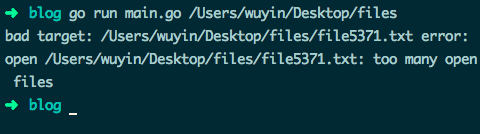
解决办法：defer 延迟执行的函数写入匿名函数中：
// 目录遍历正常
func main() {
// ...
for _, target := range targets {
func() {
f, err := os.Open(target)
if err != nil {
fmt.Println("bad target:", target, "error:", err)
return // 在匿名函数内使用 return 代替 break 即可
}
defer f.Close() // 匿名函数执行结束，调用关闭文件资源
// 使用 f 资源
}()
}
}
当然你也可以去掉 defer，在文件资源使用完毕后，直接调用 f.Close() 来关闭。
49. 失败的类型断言
在类型断言语句中，断言失败则会返回目标类型的“零值”，断言变量与原来变量混用可能出现异常情况：
// 错误示例
func main() {
var data interface{} = "great"
// data 混用
if data, ok := data.(int); ok {
fmt.Println("[is an int], data: ", data)
} else {
fmt.Println("[not an int], data: ", data) // [isn't a int], data: 0
}
}
// 正确示例
func main() {
var data interface{} = "great"
if res, ok := data.(int); ok {
fmt.Println("[is an int], data: ", res)
} else {
fmt.Println("[not an int], data: ", data) // [not an int], data: great
}
}
50. 阻塞的 gorutinue 与资源泄露
在 2012 年 Google I/O 大会上，Rob Pike 的 Go Concurrency Patterns 演讲讨论 Go 的几种基本并发模式，如 完整代码 中从数据集中获取第一条数据的函数：
func First(query string, replicas []Search) Result {
c := make(chan Result)
replicaSearch := func(i int) { c <- replicas[i](query) }
for i := range replicas {
go replicaSearch(i)
}
return <-c
}
在搜索重复时依旧每次都起一个 goroutine 去处理，每个 goroutine 都把它的搜索结果发送到结果 channel 中，channel 中收到的第一条数据会直接返回。
返回完第一条数据后，其他 goroutine 的搜索结果怎么处理？他们自己的协程如何处理？
在 First() 中的结果 channel 是无缓冲的，这意味着只有第一个 goroutine 能返回，由于没有 receiver，其他的 goroutine 会在发送上一直阻塞。如果你大量调用，则可能造成资源泄露。
为避免泄露，你应该确保所有的 goroutine 都能正确退出，有 2 个解决方法：
- 使用带缓冲的 channel，确保能接收全部 goroutine 的返回结果：
func First(query string, replicas ...Search) Result {
c := make(chan Result,len(replicas))
searchReplica := func(i int) { c <- replicas[i](query) }
for i := range replicas {
go searchReplica(i)
}
return <-c
}
使用
select语句，配合能保存一个缓冲值的 channeldefault语句：default的缓冲 channel 保证了即使结果 channel 收不到数据，也不会阻塞 goroutine
func First(query string, replicas ...Search) Result {
c := make(chan Result,1)
searchReplica := func(i int) {
select {
case c <- replicas[i](query):
default:
}
}
for i := range replicas {
go searchReplica(i)
}
return <-c
}
- 使用特殊的废弃（cancellation） channel 来中断剩余 goroutine 的执行：
func First(query string, replicas ...Search) Result {
c := make(chan Result)
done := make(chan struct{})
defer close(done)
searchReplica := func(i int) {
select {
case c <- replicas[i](query):
case <- done:
}
}
for i := range replicas {
go searchReplica(i)
}
return <-c
}
Rob Pike 为了简化演示，没有提及演讲代码中存在的这些问题。不过对于新手来说，可能会不加思考直接使用。
51. 使用指针作为方法的 receiver
只要值是可寻址的，就可以在值上直接调用指针方法。即是对一个方法，它的 receiver 是指针就足矣。
但不是所有值都是可寻址的，比如 map 类型的元素、通过 interface 引用的变量：
type data struct {
name string
}
type printer interface {
print()
}
func (p *data) print() {
fmt.Println("name: ", p.name)
}
func main() {
d1 := data{"one"}
d1.print() // d1 变量可寻址，可直接调用指针 receiver 的方法
var in printer = data{"two"}
in.print() // 类型不匹配
m := map[string]data{
"x": data{"three"},
}
m["x"].print() // m["x"] 是不可寻址的 // 变动频繁
}
cannot use data literal (type data) as type printer in assignment:
data does not implement printer (print method has pointer receiver)
cannot call pointer method on m["x"] cannot take the address of m["x"]
52. 更新 map 字段的值
如果 map 一个字段的值是 struct 类型，则无法直接更新该 struct 的单个字段：
// 无法直接更新 struct 的字段值
type data struct {
name string
}
func main() {
m := map[string]data{
"x": {"Tom"},
}
m["x"].name = "Jerry"
}
cannot assign to struct field m["x"].name in map
因为 map 中的元素是不可寻址的。需区分开的是，slice 的元素可寻址：
type data struct {
name string
}
func main() {
s := []data{{"Tom"}}
s[0].name = "Jerry"
fmt.Println(s) // [{Jerry}]
}
注意：不久前 gccgo 编译器可更新 map struct 元素的字段值，不过很快便修复了，官方认为是 Go1.3 的潜在特性，无需及时实现，依旧在 todo list 中。
更新 map 中 struct 元素的字段值，有 2 个方法：
- 使用局部变量
// 提取整个 struct 到局部变量中，修改字段值后再整个赋值
type data struct {
name string
}
func main() {
m := map[string]data{
"x": {"Tom"},
}
r := m["x"]
r.name = "Jerry"
m["x"] = r
fmt.Println(m) // map[x:{Jerry}]
}
- 使用指向元素的 map 指针
func main() {
m := map[string]*data{
"x": {"Tom"},
}
m["x"].name = "Jerry" // 直接修改 m["x"] 中的字段
fmt.Println(m["x"]) // &{Jerry}
}
但是要注意下边这种误用：
func main() {
m := map[string]*data{
"x": {"Tom"},
}
m["z"].name = "what???"
fmt.Println(m["x"])
}
panic: runtime error: invalid memory address or nil pointer dereference
53. nil interface 和 nil interface 值
虽然 interface 看起来像指针类型，但它不是。interface 类型的变量只有在类型和值均为 nil 时才为 nil
如果你的 interface 变量的值是跟随其他变量变化的（雾），与 nil 比较相等时小心：
func main() {
var data *byte
var in interface{}
fmt.Println(data, data == nil) // <nil> true
fmt.Println(in, in == nil) // <nil> true
in = data
fmt.Println(in, in == nil) // <nil> false // data 值为 nil，但 in 值不为 nil
}
如果你的函数返回值类型是 interface，更要小心这个坑：
// 错误示例
func main() {
doIt := func(arg int) interface{} {
var result *struct{} = nil
if arg > 0 {
result = &struct{}{}
}
return result
}
if res := doIt(-1); res != nil {
fmt.Println("Good result: ", res) // Good result: <nil>
fmt.Printf("%T\n", res) // *struct {} // res 不是 nil，它的值为 nil
fmt.Printf("%v\n", res) // <nil>
}
}
// 正确示例
func main() {
doIt := func(arg int) interface{} {
var result *struct{} = nil
if arg > 0 {
result = &struct{}{}
} else {
return nil // 明确指明返回 nil
}
return result
}
if res := doIt(-1); res != nil {
fmt.Println("Good result: ", res)
} else {
fmt.Println("Bad result: ", res) // Bad result: <nil>
}
}
54. 堆栈变量
你并不总是清楚你的变量是分配到了堆还是栈。
在 C++ 中使用 new 创建的变量总是分配到堆内存上的，但在 Go 中即使使用 new()、make() 来创建变量，变量为内存分配位置依旧归 Go 编译器管。
Go 编译器会根据变量的大小及其 "escape analysis" 的结果来决定变量的存储位置，故能准确返回本地变量的地址，这在 C/C++ 中是不行的。
在 go build 或 go run 时，加入 -m 参数，能准确分析程序的变量分配位置：
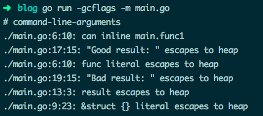
55. GOMAXPROCS、Concurrency（并发）and Parallelism（并行）
Go 1.4 及以下版本，程序只会使用 1 个执行上下文 / OS 线程，即任何时间都最多只有 1 个 goroutine 在执行。
Go 1.5 版本将可执行上下文的数量设置为 runtime.NumCPU() 返回的逻辑 CPU 核心数，这个数与系统实际总的 CPU 逻辑核心数是否一致，取决于你的 CPU 分配给程序的核心数，可以使用 GOMAXPROCS 环境变量或者动态的使用 runtime.GOMAXPROCS() 来调整。
误区：GOMAXPROCS 表示执行 goroutine 的 CPU 核心数，参考文档
GOMAXPROCS 的值是可以超过 CPU 的实际数量的，在 1.5 中最大为 256
func main() {
fmt.Println(runtime.GOMAXPROCS(-1)) // 4
fmt.Println(runtime.NumCPU()) // 4
runtime.GOMAXPROCS(20)
fmt.Println(runtime.GOMAXPROCS(-1)) // 20
runtime.GOMAXPROCS(300)
fmt.Println(runtime.GOMAXPROCS(-1)) // Go 1.9.2 // 300
}
56. 读写操作的重新排序
Go 可能会重排一些操作的执行顺序，可以保证在一个 goroutine 中操作是顺序执行的，但不保证多 goroutine 的执行顺序：
var _ = runtime.GOMAXPROCS(3)
var a, b int
func u1() {
a = 1
b = 2
}
func u2() {
a = 3
b = 4
}
func p() {
println(a)
println(b)
}
func main() {
go u1() // 多个 goroutine 的执行顺序不定
go u2()
go p()
time.Sleep(1 * time.Second)
}
运行效果：
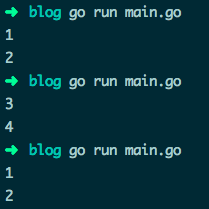
如果你想保持多 goroutine 像代码中的那样顺序执行，可以使用 channel 或 sync 包中的锁机制等。
57. 优先调度
你的程序可能出现一个 goroutine 在运行时阻止了其他 goroutine 的运行，比如程序中有一个不让调度器运行的 for 循环：
func main() {
done := false
go func() {
done = true
}()
for !done {
}
println("done !")
}
for 的循环体不必为空，但如果代码不会触发调度器执行，将出现问题。
调度器会在 GC、Go 声明、阻塞 channel、阻塞系统调用和锁操作后再执行，也会在非内联函数调用时执行：
func main() {
done := false
go func() {
done = true
}()
for !done {
println("not done !") // 并不内联执行
}
println("done !")
}
可以添加 -m 参数来分析 for 代码块中调用的内联函数：
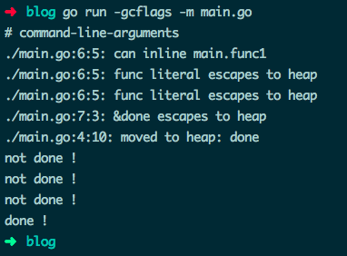
你也可以使用 runtime 包中的 Gosched() 来 手动启动调度器：
func main() {
done := false
go func() {
done = true
}()
for !done {
runtime.Gosched()
}
println("done !")
}
运行效果：
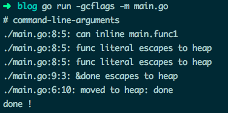